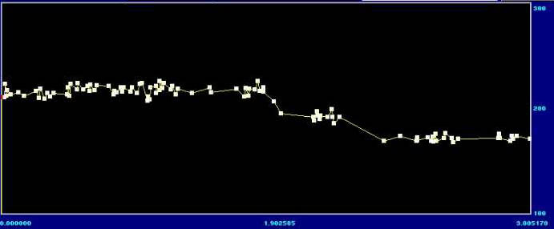
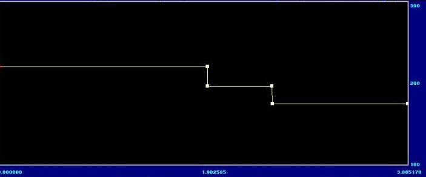

|
|
CDP can extract pitch data from the time-varying spectrum, if the sound is pitched (contains harmonic frequencies). Pitch files can then be manipulated in various ways, before being re-synthesised.
Pitch can be extracted either as a binary pitch file (.frq), or a breakpoint text file (.pch or .brk). The breakpoint version may also provide a useful profile for controlling other processes, such as changing the dynamic contour to match a rise and fall in pitch.

Breakpoint file of extracted pitch from three notes (A-G-F) of sung plainchant.
To re-sythesise sound, the pitch file is combined with a formant file (.for). Formant files extract the time-varying spectral envelope of a sound – see FORMANTS). The formant file can come from the source or a different sound. However, it's important to realise that:
- changes to pitch data will only succeed to the extent that the frequencies of the altered pitches are also present (i.e. strong or weak) in the formant file.
- the dynamic profile will be entirely that of the formant file.
It can often be useful to use a formant file taken from a noise-like sound, or one created from a mix of multiple transpositions, to ensure that the desired pitches are present at sufficient strength.
CONVERSIONS (CDP groups: REPITCH, COMBINE, ONEFORM)
- GetPitch extracts pitch from a spectral file to either a binary pitch file (.frq) or a breakpoint text data file (.pch or .brk). (In Soundshaper pitch extraction is normally performed automatically in the background using current settings.) The breakpoint file can be fully edited (e.g. in Soundshaper's Graph-Edit or CDP's BrkEdit editor) to change pitch or timings. Data reduction can also be performed in BrkEdit.
The conversion parameter values have a marked effect on the result and some experimentation may be required with these to get a good outcome for your purposes.
- Make combines a pitch data file (.frq) with a formant (spectral envelope) file (.for) to create a spectral file (.ana) (which can then be converted back to sound via PvocSynth). Both files must have been derived from the same PVOC settings, but they can come from different source sounds.
The success of this process depends on the presence in the formant file of the harmonics implied by the pitchfile's pitch: the amplitude of these harmonics in the formant file, at the time of the pitch in the pitch file, will determine the extent to which the pitch is heard in the combined file.
- Make2 is a variant of Make, generating a spectrum from pitch, formant and also envelope data (.evl), possibly from different sounds. (The envelope is extracted using Envel Extract or Analenv.)
- Oneform Combine is a version of Make for a single-formant file (.for). It combines pitch and single-moment-formants data to make a new spectral file.
PITCH-DATA PROCESSES (CDP group: REPITCH)
Several pitch-altering functions have been considered in the SPECTRAL section, for re-synthesis with the source's formant file. (Soundshaper has these built into batch files). However, re-synthesising with a formant file taken from a different source opens up many possibilities for creating hybrid sounds.
The REPITCH function group offers several ways to alter binary pitch files (.frq):
- Approx makes a randomly varied copy of a pitch file, varying slightly or radically within a range of up to 96 semitones, and with timing variations up to the length of the file. Several slightly-varying copies can be resynthesized and mixed to give a natural chorus effect.
- Exag exaggerates the range and/or contour of the extracted pitch. The interval from a mean pitch to the actual pitch is either stretched or shrunk, or both.
- Invert inverts the pitch contour around a given pitch, either using mirror inversion, or a mapping text file of intervals and their inversions. You can map intervals however you wish, including fractional (microtonal) MIDI values.
- Quantise constrains pitches to a given template. For example, quantising to the semitone eliminates microtonal shifts, which matches some of the behaviour of "autotuning" programs, though not in real-time:

Extracted pitch quantized to exact MIDI values (from plainchant above)
- Randomise varies the pitch line randomly, with control over the pitch and time ranges and the slew: whether the upward range is more than the downwards, or vice-versa.
- Pchshift transposes by fixed number of semitones.
- Smooth averages the pitch across the specified time-window and then interpolates from there to the next averaged time-frame. The mean pitch around which it is averaged is time-variable and could come from quantized pitch data
- Vibrato modulates pitch, preserving time (necessary if several pitches vibrato simultaneusly).
- Vowels is similar to the spectral filtering process Hilite Vowels, which imposes vowel formants on a sound. Repitch Vowels imposes vowels on a pitch file, creating artificial speech-like sounds.
- Generate creates a pitch file from a time and MIDI-pitch data file, which can be edited in Graph-Edit. The function is potentially extremely useful for the purposes of imposing pitch, when combined with a suitable formant file, especially a sound rich in partials such as a gong or cymbal.
- Synth synthesises a pitch-changing, but timbrally static, spectrum from a pitchfile, according to a given set of weighted harmonics. This can be vocoded with another sound to give it some dynamic life.
SUPPORT FUNCTIONS (CDP groups: REPITCH, PCHINFO, PSOW)
These utilities offer mainly conversion between pitch-data types and handling of unpitched (zero) or silent windows in the pitch file.
- Cut extracts a segment of a pitch file (.frq).
- Fix is a collection of pitch file utilities: Cut – remove pitch between timepoints; Filter; Smooth – onset errors and glitches; Force pitch – to be some value at start/end; Interpolate – through unpitched windows to produce pitch throughout.
- Interp interpolates from one pitched area to the next, replacing noise or silence with sustained pitch or a glissando. This is an essential "fix" if the pitch file is to be used in a process that will reject unpitched areas (such as Pitchinfo Convert)
- Insertsil inserts silence into a pitch file.
- Insert Zeros inserts unpitched areas (zeros) into a pitch file (.frq).
- NoisetoSil converts unpitched areas of a pitch file (noise) to silence.
- PitchToSil replaces pitched areas of a pitch file with silence.
Three functions are available to convert binary pitch files (.frq) to breakpoint pitch files (.pch or .brk):- PchToText (Soundshaper: PchToBrk) produces an outline of the pitch (quite sufficient for many purposes).
- PtoBrk is much more detailed and is really intended for use with PSOW programs.
- Pitchinfo Convert has a data-reduction parameter for simplifying the breakpoint file.
- BrktoPi(tch) converts a pitch breakpoint textfile (.pch or .brk) to a pitch file (.frq).
- Combine/CombineB: these convert and combine the various pitch file-types: .frq (pitch file), .pch/.brk (breakpoint) and .trn (transposition). They can also be used to impose one pitch or transposition profile on another.
Combine introduces a new data type: a binary transposition file (.trn) generated from two pitch contours (.frq), or one plus a pitch breakpoint file.
A bewidering number of combinations are catered for (pch = breakpoint pitch):
- Combine: frq+frq to trn, frq+pch to trn, frq+trn to frq, frq+trnbrk to frq, trn+trn to trn, trn+trnbrk to trn.
- CombineB: frq+frq to trnbrk, frq+pch to trnbrk, frq+trn to pch, frq+trnbrk to pch, trn+trn to trnbrk, trn+trnbrk to trnbrk.
Transposition files can be used with Repitch Transpose (Mode 4), but nothing else (except the various combinations). The CDP Reference provides an example of how to impose a specific transposition contour:
- extract the pitch from the source using Getpitch, producing a binary pitch data file (.frq).
- generate the pitch contour to be imposed, from time and MIDI data, using Repitch Generate.
- combine this with the extracted pitch to generate a transposition file (.trn)
- apply the transposition data (.trn) to the source analysis-file using Transpose, Mode 4.
However, a simple breakpoint file applied directly to Transpose or Speed will have the same effect.
SPECTRAL PROCESSES EDIT/MIX PROCESSES
The descriptions above are adapted from the Soundshaper manual and do not necessarily reflect the views of CDP.
For details of each function, always refer to the CDP Reference Documentation.
For further details about CDP see the Composers' Desktop Project website.
| NEXT PAGE: EDIT/MIX PROCESSES |